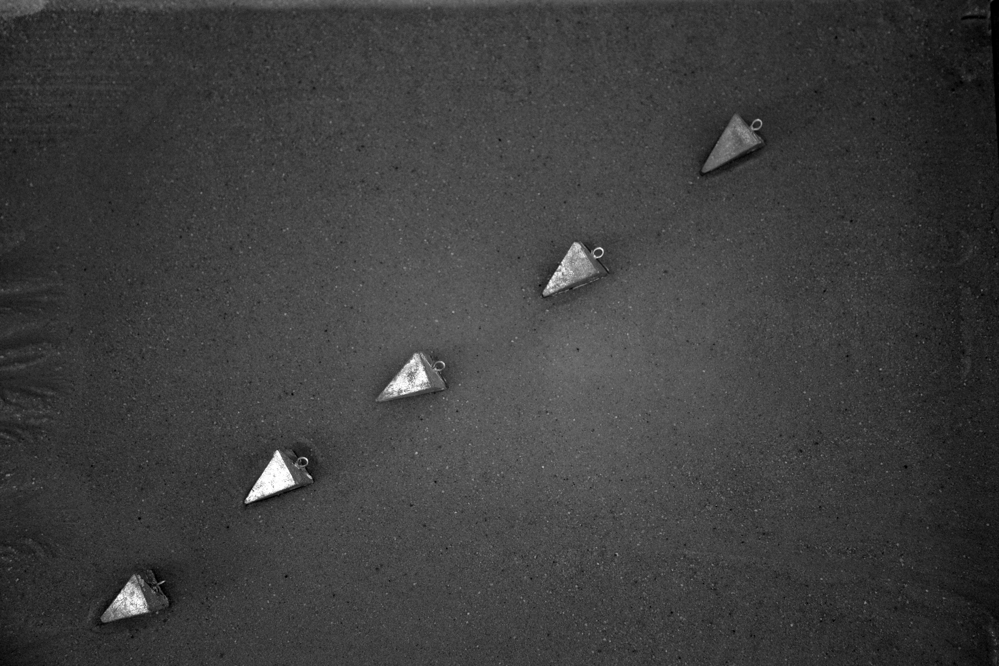
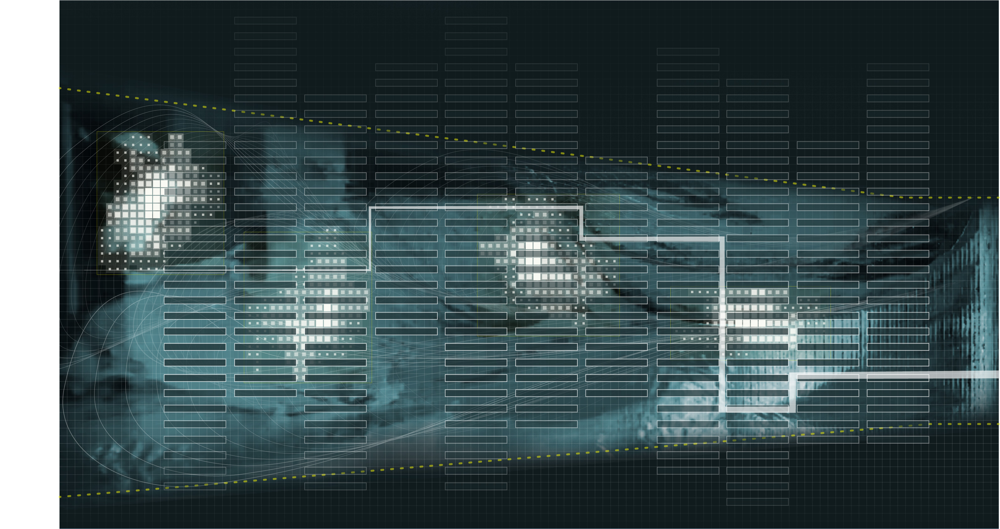
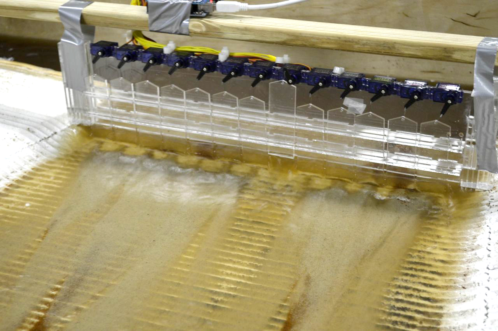

The Practice as Research Instrument
I did not set out to build a theory. I set out to build things, installations, models, books, studios, territorial propositions and the theory emerged from what the building taught me. Over twenty years, each project revised the hypothesis of the one before it. What began as a question about representation became a question about operation, then about codification, then about autonomy. The trajectory was not planned, it was adaptive. The career itself is the first evidence for the epistemology this dissertation proposes.
Practice-based research positions creative work not as illustration of theory but as a primary mode of inquiry, a method through which knowledge is produced, tested, and refined. In this framework, my accumulated body of projects constitutes an evolving research program, each work building upon, challenging, or extending insights generated by its predecessors. The phased structure that follows is not biographical convenience but reflects genuine shifts in the questions being asked, the technologies being deployed, and the scales of engagement being pursued.
But the theoretical frameworks proposed in this dissertation did not emerge from the projects alone. They emerged from refracting them. Each project entered the world through instrumental contexts in the form of grant narratives, book chapters, competition briefs, consulting deliverables and each context demanded a specific framing that explained what it does, why it matters, why it should be funded or built or published. Those framings were true but partial. They served a purpose, and the purpose constrained what could be seen.
The method of this dissertation has been to pass the same body of work through different narrative media and to re-read each project from vantage points that the instrumental contexts never demanded. This method was not arrived at theoretically, it was developed through practice, across six Practice Research Symposia (PRS) held biannually from 2020 to 2023, with a seventh supplementary session. At each PRS, I presented the same body of work to my committee and peers and each time, I retold the story slightly differently. The projects changed minimally but the angle of inquiry changed. And from each new angle, properties emerged that were always present but traveling invisibly within the original framing. What I came to call refraction is the systematic retelling of practice from vantage points its instrumental contexts never demanded and became the dissertation\'s core method as a way of generating new conceptions from existing work by deliberately shifting the narrative medium through which the work is examined.
The PRS structure made the refractions visible. The full account of what the panelists named at each session --- Blythe's "two registers," Kelsch's "truth and lies," Lootsma's "material computers," Marcelo's "virtual space of possibilities" --- is developed in Chapter 3, where these observations ground the dissertation's methodological argument. What matters here is what the PRS process revealed specifically about the tools: not just that the projects had been refracted, but what the refraction recovered about the practice of tool-making itself.
Paul Kelsch, at PRS 6, pushed the methodology toward a distinction that Ch 03 does not fully develop: "Are you thinking about on the one hand the tools, and on the other hand the tool-making as a form of landscape architecture practice?" The distinction matters. Tool-making is not just preparation for tool use, it is itself a form of knowledge production, a practice in which the designer develops the capacity to ask questions that pre-existing tools cannot formulate. The practice documented in this chapter is not primarily about what the tools enabled; it is about what building them produced epistemologically. And when Paul Kelsch pressed on the geographic specificity of the modeling work noting that the braided channel formations he observed were particular to the conditions of the Mississippi Delta rather than generalizable to rivers like the Potomac or the Los Angeles he was demonstrating that this tool-making knowledge is always situated --- the tools are not generic instruments but instruments developed in and for specific material conditions. Each re-reading reveals new properties, but also new constraints. The method is productive precisely because it is disciplined and not free association, but systematic inquiry from specified vantage points.
The Sedimachine was not only a prototype for coastal sediment management but refracted through the question of failure, it became evidence for why sensing requires calibrated context. REAL was not only a research lab, refracted through the question of epistemology, the model became a site. These refractions conducted through the sustained inquiry of doctoral research and tested repeatedly through the PRS structure are how twenty years of practice produced a theoretical framework that no single project could have generated on its own.
The projects collected here range across registers of realization, practices that engaged directly with institutions, sites, materials, and implementations. They are manifests that rendered theoretical propositions operational through scholarship, prototypes, and working demonstrations and speculations that tested ideas through projective scenarios and disciplined imagination. Across these registers, the work has consistently interrogated a central question, how might landscape architecture move from designing static forms to choreographing responsive processes? The answer, it turns out, required learning to see differently, then to touch, then to code, and finally to let go.
Learning to See (2005--2012)
The mid-2000s presented landscape architecture with a representational crisis. Digital tools imported from architecture struggled to capture the indeterminacy fundamental to landscape materials. The vector line implied precision where the landscape demanded flux. Before I could intervene in dynamic systems, I had to learn to see them. The projects of this phase interrogated the mechanics of representation itself.
Thresholds (2006), an interactive installation at Louisiana State University developed with Wes Michaels, was the first experiment. A high-contrast mural served as a visual datum, a camera performed continuous blob detection, custom Processing software converted contrast gradients into isolines displayed in real-time. As pedestrians moved through the atrium, they disrupted the contrast field, generating ephemeral topographies. Occupants became unwitting participants in landscape generation, their bodies registering as topographic events. At the time, the project was framed as a technology demonstration, an exploration of real-time sensing in architectural space. Refracted through this dissertation, it reveals something else, the first evidence that representation in landscape architecture is not transcription but interpretation. The contour line, the profession\'s most fundamental notation, was shown to be an active construction of gradient and threshold rather than a neutral recording of existing terrain. That defamiliarization, making the familiar strange so that its assumptions become visible, would prove to be the deeper contribution.
A parallel experiment, Surface Tension (2006--07), pushed the representational question into the material register. Cast landscape surfaces embedded with electronics, LEDs, and sensors responded to physical interaction, a model that was simultaneously representation and instrument. Touching the surface triggered responses, making the terrain behave as a primitive responsive landscape at miniature scale. At the time, the project was treated as an exercise in embedded computation, a curiosity. Refracted, it established a principle that REAL and the UVA lab would later realize at research scale: that physical models need not merely record or depict but can actively produce knowledge through engagement. The model as operational instrument, not passive object, begins here.
Visualization is not merely communication, it is world-making. As designer and theorist Robert Pietrusko argues, \"Data does not just inform our knowledge, it now produces the categories we use to discuss and understand the world and ourselves\" (Pietrusko 2020, 124). When we choose which environmental variables to measure through a sensor array or visualization interface, we are not simply discovering pre-existing features, we are constructing the very categories through which a landscape becomes legible. Lev Manovich\'s concept of \"database as symbolic form\" extends this insight, \"every database encodes choices about what is countable, what is visible, and what falls outside the frame and the data visualization itself is a form of argument about what matters\" (Manovich 2003).
This insight, that representation shapes understanding is expressed through the projects that followed. The ACADIA paper Ambient Space (2007), co-developed with Wes Michaels, articulated the theoretical distinction that would anchor everything that came after: computation in landscape is not a tool for depicting spaces but a medium for constituting them. Processing-based software sketches translated real-time sensor input into spatial projections, environments that responded to presence and movement rather than recording fixed conditions. The shift from digital drawing to digital landscape, from representation to medium, was named here before it was built anywhere. Abstraction Language (ACADIA 2009) extended this into ecological territory, proposing a systematic vocabulary for moving between quantitative data and spatial design operations. The paper argued that the gap between ecological datasets and design decisions was not a technical problem but a representational one, and that the operations bridging them, filtering, layering, thresholding, interpolating, were themselves epistemological commitments. Tools are not neutral. They encode claims about what matters and what can be seen. This argument, that the tool is a manifest, would become foundational to the dissertation's understanding of computation in landscape design. Landscapes of Fantasy (2008), a seminar using Kim Stanley Robinson\'s Red Mars as the structuring device for digital representation instruction, pushed the principle into pedagogy, students who could not Google a Martian canyon had to construct it from descriptive language, learning that imagination precedes representation. Over/Under (2009), a competition entry for Lausanne Jardins developed with Allen Sayegh, Edith Ackermann, and Marcella Del Signore, pushed it into ecology, a single specimen citrus tree sustained by visible hydroponic infrastructure above a subway station, its projected image shifting below with the living plant\'s seasonal changes. Refracted, Over/Under introduced the specimen/field dialectic, the singular cultivated organism sustained by technological prosthesis versus its distributed digital multiplicity. The citrus tree, maintained by systems its audience never sees, responding seasonally according to its own biological rhythm, this was, in embryonic form, the relationship between designed infrastructure and biological autonomy that would later produce the cultivant.
These experiments in seeing culminated in two publications. Digital Drawing for Landscape Architecture (2010), co-authored with Wes Michaels and recipient of the 2012 ASLA Award of Excellence in Communication, gave the discipline a methodology for digital representation calibrated to its specific concerns. The core contribution was the concept of the digital composite, a recognition that landscape representation requires layering heterogeneous information that no single software engine can generate. The hybrid workflow synthesized the precision of vector drawing with the ambiguity of raster imagery, producing representations capable of holding the indeterminacy fundamental to landscape materials. Published as a professional textbook, a how-to guide for practitioners transitioning to digital workflows, the book\'s refracted contribution is epistemological, the way a landscape architect draws a site determines how they understand it. Vector lines imply hard edges, landscape materials are defined by flux. By equipping the discipline to represent atmospheric depth, we equipped it to think about higher levels of complexity.
Modeling the Environment (2012), co-authored with Natalie Yates, introduced the critical dimension of time. A building is finished when construction ends, a landscape is just beginning. The book demonstrated procedural and parametric modeling approaches, terrain that could erode, forests that could grow across decades according to ecological logic and argued for integrating data directly into design models. Again, the instrumental framing was pedagogical, software instruction for students. Refracted, the book enacted the shift from representation to analysis, the digital model transformed from a picture of the site into a database of the site. When the model contains actual geospatial information, it becomes an instrument for investigating dynamics rather than depicting appearance.
The third contribution of this phase was institutional rather than representational. The Coastal Sustainability Studio and its technical research arm, the TiKI Lab (Technologies, Information, Knowledge, Interaction), established at LSU from 2010 to 2013 with Jeff Carney, Lynne Carter, and a shifting community of researchers, demonstrated that the trans-disciplinary studio culture landscape architecture brings to territorial problems could function as a primary mode of knowledge production. The CSS mobilized landscape architects, environmental scientists, urban planners, and community advocates to develop resilience strategies for Louisiana's coastal crisis. The TiKI Lab produced animated visualizations, spatial narratives, and interactive GIS platforms that translated complex geospatial data into formats accessible to affected communities and policymakers, feeding directly into Louisiana's coastal protection and restoration planning. Framed institutionally as applied research and community service, the CSS/TiKI Lab's refracted contribution was a demonstration of visualization as argument at territorial scale: the choice of what to show, how to show it, and for whom, was never neutral. The tools were manifests, encoding particular claims about whose futures mattered and what kinds of knowledge deserved to be made public. That lesson carried into every sensing infrastructure and data visualization that followed.
By 2012, I had a better grasp on how to see dynamic systems, but seeing was not enough. The installations showed me feedback loops and the books gave the discipline a visual language for temporal processes. What I had not yet done was touch the material, put my hands in the sediment, build the apparatus, close the loop between sensing and physical intervention. That required a different kind of laboratory.
Susan Leigh Star and James Griesemer\'s concept of \"boundary objects\" is relevant here. Boundary objects such as maps, models, data visualizations can hold different meanings for different communities while still coordinating action across them (Star & Griesemer 1989). A sensor deployment in a wetland serves different purposes for engineers (hydraulic data), ecologists (population monitoring), and designers (aesthetic visualization). The same sensing apparatus is a boundary object that enables collaboration precisely because it allows each discipline to project its own questions onto the shared data.
Learning to Touch (2012--2016)
If Phase I asked how to represent dynamic systems, Phase II asked how to operate within them. The Mississippi River Delta, where the boundary between \"natural\" process and engineered infrastructure had long since collapsed and became the laboratory. Sediment deposition builds land while subsidence and sea-level rise consume it. Levee systems constrain flows that once nourished wetlands. Oil infrastructure threads through ecosystems it simultaneously exploits and endangers. The Delta demanded more than better pictures, it demanded better instruments.
The Sedimachine (2012), developed with Frank Melendez at LSU, was the first apparatus. A plexiglass surface at an incline, water delivered via a perforated copper tube, sand patterning according to which perforations were open. Phase two added a robotic spillway, twelve operable gates controlled through Arduino, transforming the apparatus from passive observation into active choreography. As a research prototype, the Sedimachine was framed as proof-of-concept for controlled sediment deposition, a step toward coastal land-building. Refracted, it established a foundational distinction that runs through the entire dissertation, between designing forms and designing the operations that generate forms. The perforated tube and robotic spillway were instruments for choreographing process rather than specifying outcome.
The Sedimachine also produced a productive failure. A Microsoft Kinect depth sensor, deployed to document surface morphology, proved unable to capture the thin depositional layer. Rather than abandoning digital documentation, this limitation drove the search for modeling systems producing more substantial morphological change and for complementary sensing approaches operating at different scales and resolutions. Refracted through the question of methodology, the Kinect failure became evidence for a principle, sensing requires calibrated context. Without appropriate resolution, data is noise. Failure became a research driver, a principle I would return to repeatedly.
Fort Proctor: A Conditional Preservation (2013), co-authored with Emery McClure and presented at ARCC, brought this logic into direct confrontation with cultural heritage. Fort Proctor, a Civil War-era fortification in Plaquemines Parish, now stands entirely surrounded by water, the land that once connected it to the mainland long since eroded and subsided. Traditional preservation assumes a stable ground: the building endures because the land endures. Fort Proctor makes that assumption impossible. The design research proposed what the paper terms "conditional preservation," strategies calibrated to the fort's ongoing submergence rather than to a fixed historical moment. Not restoration to an origin, but designed engagement with the process of loss itself. Refracted, Fort Proctor named something the Sedimachine had begun to show but couldn't fully articulate: the ground is not a datum. It is a process. Every design intervention, every act of preservation or management or sensing, engages a surface already in motion. This reframing of ground as dynamic, not stable, runs beneath all the composite modeling work that followed.
The search led to the Responsive Environments and Artifacts Lab (REAL) (2014--2017), co-directed with Allen Sayegh at the Harvard Graduate School of Design. REAL\'s primary instrument was an EmRiver geomorphology table augmented with multi-modal sensing, overhead Kinect for continuous point clouds, ultrasonic range-finding for precise spot elevations, image analysis for tracking sediment behavior, dye visualization for flow patterns. The overlay of sensing modalities produced data at multiple resolutions and temporalities, a continuously updated digital representation of a physical model\'s own dynamic behavior.
What REAL established was composite modeling as a design methodology. The history of physical hydraulic modeling provides essential context. As Hubert Chanson has documented, reduced-scale models have been used since antiquity to study flow phenomena, but the practice reached institutional maturity through massive installations like the U.S. Army Corps of Engineers\' Mississippi Basin Model at Vicksburg. These models enabled engineers to observe complex fluid dynamics that resisted mathematical formalization in turbulence, sediment transport, and channel migration through direct material engagement. Yet traditional hydraulic models remained analog instruments, observed by human eyes and interpreted through engineering judgment. REAL asked what might become possible when physical models were instrumented with digital sensing and coupled to computational analysis.
The answer was composite modeling, physical models that excel at reproducing emergent behaviors, sediment sorting, channel braiding, and delta lobe switching coupled with digital systems that excel at pattern recognition, analysis across scales, and control logic. Justine Holzman, who co-developed the REAL methodology and has written the most precise account of its epistemological stakes, describes this as "hydraulic modeling as craft": the effectiveness of these models depends on the skill of the modeler "to in certain situations, know if it looks right, and to understand, intuitively, how to alter or shift the model to guide results" (Holzman 2016). This is not engineering judgment in the conventional sense but a design intelligence developed through sustained material engagement, the modeler reading the sediment the way a craftsperson reads the grain of wood. Chris Paola and colleagues have argued for the "unreasonable effectiveness" of such experimental stratigraphic work, REAL extended this insight from scientific investigation to design methodology. The geomorphology table operated with synthetic sediment particles of varying sizes and densities, self-organizing based on water velocities to produce stratigraphic patterns analogous to natural fluvial deposits. Programmable pumps controlled stream and groundwater flow through repeatable hydrographs. The overlay of sensing modalities, overhead Kinect sensor for continuous point clouds, ultrasonic sensors on motorized rails for precise spot elevations, image analysis for tracking morphological change, dye visualization for flow patterns, produced data at multiple resolutions and temporalities, from continuous low-resolution topography to precise spot measurements, from instantaneous flow visualization to long-duration morphological tracking.
But visualization is not transparent representation. It is argument. Johanna Drucker\'s Humanities Approaches to Graphical Display argues that \"every visualization is interpretive, not objective and every choice of scale, color, and viewpoint shapes what the viewer will see and believe. Tools are always partisan\" (Drucker 2014). When you design a heatmap of sensor data, you are not neutrally displaying pre-existing facts. You are making claims about what matters, what should be attended to, what should be acted upon.
Institutionally, REAL was framed as a research lab, infrastructure for funded investigations into responsive technologies. Refracted through this dissertation, its deepest contribution is the concept of the model-as-site. Traditional hydraulic modeling seeks similitude, mathematical relationships (Froude scaling, Reynolds numbers) establishing proportional correspondence between model and prototype. REAL deliberately departed from this convention. The geomorphology table was conceived as its own environment, with its own elements of novelty and surprise, rather than a scaled replica of any particular landscape. The presumed scale was illustrative and diagrammatic rather than establishing linear relationships with real-world conditions. This is what Bart Lootsma recognized when he described the models as \"material computers\" and devices in which computation is embedded in the material behavior itself, not imposed from outside.
This reframing, from prediction to discovery, from surrogate to site, is one of the dissertation\'s central epistemological moves. Rather than using models to predict outcomes in specific locations, designers could use them to discover principles of interaction between flow, sediment, and intervention. The model became a generative space, a dialogue between experimental environment and the broader systems it serves to inform, where design intentions could be tested against material dynamics without claiming predictive authority. Bernard Patten and Eugene Odum\'s work on the cybernetic nature of ecosystems provided theoretical grounding, while Antoine Picon\'s historical scholarship on French hydraulic engineering illuminated how technical knowledge develops through iterative engagement with territorial systems.
The feedback between sensing and physical model enabled development of responsive prototypes in the form of robotic sediment gates, repositionable sieves, and flow disruptors, expressing a new design vocabulary of \"choreography and resistance.\" Three modes of engagement emerged, direct interaction through physical manipulation, responsivity through sensing-driven reaction, and autonomy through systems that learn behaviors through feedback. Student work pushed these frameworks in directions the lab itself could not have anticipated. Leif Estrada\'s MLA thesis, \"Towards Sentience,\" explored the deconstruction and reconstitution of the Los Angeles River through individually controlled insertions that redirect sediment from demolished concrete channel, working with cyclical hydrology to re-pattern the river bed, the new channel emerging through interactions that guide outcomes within controlled ranges. Andrew Boyd and Tyler Mohr\'s \"FIN\" developed a systematic taxonomy of flow-modification devices, producing topographic plans that speak to movement and probabilities of change, representations expressing landscape as gradient between stasis and flux rather than fixed form. Ricardo Jnani Gonzalez\'s \"Attuning Sediment Transfer\" investigated how actuated elements could choreograph deposition patterns. The lab was generating a new kind of design intelligence, one that could not be reduced to any single researcher\'s intentions.
But if REAL taught me how material systems behave, Branding Islands Making Nations (2016), developed with the Vertical Geopolitics Lab for the Venice Architecture Biennale, taught me that material processes are never separable from political ones. The project examined how constructed land acquires political existence through representational practices as much as through material deposition. An artificial island becomes sovereign territory not merely when sand is dredged but when it appears on official maps, receives a name, and circulates through media imagery. A satirical competition invited marketing professionals to develop branding packages for contested landmasses in the South China Sea, exposing the mechanisms by which representation manufactures political reality. As a Biennale exhibition, this was cultural critique and provocation. Refracted, it forced a reckoning with the designer\'s complicity that would reshape the ethical framework of everything after it, the capacity to choreograph land-making processes is also the capacity to enable territorial expansion and displacement. The justice dimensions of the Chesapeake Bay work and the ethical complexity of the NEOM consultation both trace back to this confrontation.
Responsive Landscapes (2016), co-authored with Justine Holzman, consolidated Phase II\'s insights into transmissible theory. The book provided the discipline with a precise taxonomy of responsive modes in six categories (elucidate, compress, displace, connect, ambient, modify) describing how technology might mediate between environmental process and human experience. The taxonomy moved conversation beyond vague notions of \"smart\" landscapes to specific design strategies. Published as a professional reference, the book\'s refracted contribution was to reframe technology in landscape from a question of efficiency to a question of phenomenology, changing not just how systems perform but how humans perceive and interact with environmental processes. The gradient from elucidate through modify traced increasing levels of technological intervention, and the book introduced landscape as cybernetic system with environments characterized by feedback loops between sensing, processing, and actuation, updating mid-century cybernetic theory for contemporary ecological contexts.
By the end of Phase II, I could touch the material, close the feedback loop, and name what I was doing. But I was still using other people\'s tools. The question became, what happens when you open the black box and write your own?
Learning to Code (2016--2020)
The move from LSU to Harvard and subsequently to the University of Virginia marked an institutional scaling of the computational agenda. Architecture\'s parametric turn had produced formally complex buildings but landscape\'s computational turn would need to produce something different, in particular tools for managing ecological complexity, indeterminacy, and temporal depth. The projects of this phase focused on codification in multiple senses including the literal writing of code, the establishment of protocols and taxonomies, and the encoding of landscape logics into executable form.
The work at UVA (2017--present), developed with Brian Davis and Xun Liu, evolved the REAL methodology from focused research instrument into a multi-purpose platform supporting PhD investigations, advanced studios, and foundational instruction. The methods developed experimentally at Harvard were codified, transforming experimental practice into teachable methodology. The expanded sensing infrastructure and programmable hydrographs enabled systematic experimentation while acknowledging the inherent variability of complex systems. Tool development is not a linear process of improvement. It is what Andrew Pickering calls \"the mangle of practice,\" a dance of resistance and adaptation where the tool pushes back against our intentions, revealing new possibilities we didn\'t anticipate (Pickering 1995). Tool development requires accepting that materials, sensors, and systems have their own agency and resistance.
As institutional infrastructure, the UVA lab served pedagogical and research missions. Refracted, its critical advance was the integration of machine learning into the responsive framework enabling the transition from responsivity to autonomy. Early thermostats operated through fixed thresholds but contemporary systems like Nest develop patterns through machine learning, optimizing across multiple variables. The geomorphology lab became a testing ground for this transition applied to landscape infrastructure, sediment gates that develop response patterns through learned optimization rather than pre-programmed rules. The gradient from interaction through responsivity to autonomy maps a trajectory of increasing machine agency, one the lab enables investigating at experimental scale before territorial deployment.
The lab also produced new forms of landscape notation, representations that speak to movement and probabilities of change rather than capturing terrain as snapshot. Areas of stability and active change appear as gradients rather than boundaries, providing graphic language for landscapes understood as dynamic systems. Pietrusko notes that \"Organizations do not produce data to model the world accurately, but in a form that is useful for their internal goals and operations. Though the names of categories used in data may appear commonsensical, their meaning and form are highly customized to the organization within which they were made\" (Pietrusko 2020, 125). When we design a sensing network for a landscape it is environmental design at the scale of the data infrastructure itself.
Codify (2018), co-edited with Adam Mekies, articulated the conceptual shift from using computation for landscape architecture to thinking computationally about landscape architecture. As an edited volume, it surveyed the field, a professional resource collecting diverse computational approaches. Refracted, its central argument was the tool-maker turn, landscape architects must open the black box of commercial software and write algorithms calibrated to specific ecological questions. If ecological systems are too complex to fully specify, and environmental conditions too variable to predict, then design must operate through establishing rules and parameters within which outcomes emerge. The designer\'s role shifts from determining form to calibrating process, a move from author to curator of algorithms. Richard Hindle observed that the book \"convincingly argues that Landscape Architecture is uniquely positioned to define this sector of technology, and in the process redefine itself.\"
Then came the project that changed the trajectory. Algorithmic Cultivation (2019), developed with Lucia Phinney, Robin Dripps, and Emma Mendel at UVA, was an installation where a gantry robot pruned living plants according to data streams external to the growing environment, environmental data, species migration patterns, information having no direct relationship to the plants themselves. The robot\'s cuts posed questions, the plants\' responses, measured through leaf size, branching patterns, and color changes, provided responses. The data became a medium for interaction rather than a tool for control.
The project was only partially realized. Technical difficulties limited operation to a short period rather than the planned year-long duration. As an art-science installation, it explored interspecies communication and robotic cultivation. But this project\'s refraction is the most consequential in the dissertation. The failure was more instructive than success would have been. The aspiration to maintain a year-long feedback loop proved beyond the available technical and institutional capacity, illuminating the gap between speculative design and realized infrastructure that territorial-scale autonomous systems would face at far greater magnitude. And the plant, meanwhile, responded to pruning according to its own biological logic regardless of the data driving the robot. It grew where it needed to grow. It was, in the most literal sense, smarter than the model.
This was the moment the cultivant began to emerge though I would not find a name for it until later. The plant in Algorithmic Cultivation was not a passive recipient of robotic intervention but an active participant whose responses could not be fully predicted or controlled. The installation staged an encounter between human intention (setting parameters), machine cognition (translating data into movement), and biological agency (the plant\'s own logic), a Third Intelligence, not human, not machine, but the irreducible contribution of the living organism. Julian Raxworthy\'s concept of the viridic, biological autonomy, maintenance as design medium, gave me the theoretical frame. The cultivant, my extension of Raxworthy, would name the entity that emerges when design deliberately engages that autonomy as a co-author rather than a substrate. None of this was visible in the installation\'s original framing. It required refraction, the doctoral re-reading, to see what the plant had been telling me.
Failure (2019--2020), a drawing and film developed with Emma Mendel for exhibitions at Pratt Institute and the Chicago Architecture Biennial, made the epistemological argument explicit. The drawing accumulated through months of iterative process, code-generated base, ink, chemical transfers, erasure and with each layer responding to traces of previous layers while establishing conditions for subsequent interventions. No layer was treated as sacred. Errors were not eliminated but incorporated. The companion film catalogued two centuries of environmental failures, presenting failure not as aberration but as constituent element of environmental history. Exhibited as artistic practice, the drawing and film were received as meditations on complexity and indeterminacy. Refracted, they articulated the paradigm shift at the heart of this dissertation, from predict-and-control to learn-and-adjust. The ecological science here is unambiguous: Hastings and Wysham (2010) demonstrated mathematically that regime shifts in complex ecological systems can occur with no warning, that in systems exhibiting nonlinear dynamics and multiple attractors, the variance and skew that theoretically precede a shift simply do not appear. "Drastic changes can appear in nature without warning." Landscapes fail not because designers err but because complex systems exceed the predictive capacity of any model built to describe them. The design question is not how to prevent failure but, drawing on Nassim Taleb\'s concept of anti-fragility, how to develop systems that more readily recover from disturbance and grow stronger through encounters with the unexpected.
By the end of this phase, I had learned to write my own tools, and one of them, the robot gardener, had shown me something I did not expect in that the plant has its own intelligence, and the design must make room autonomy.
Learning to Let Go (2017--2025)
The emergence of machine learning and artificial intelligence as practical design tools prompted a fundamental reconsideration of agency. Previous phases had developed responsive systems, environments that reacted according to pre-specified rules. But AI systems learn, adapt, and generate behaviors not explicitly programmed. They introduce a mode of autonomy that challenges traditional assumptions about the designer\'s role. The projects of this phase ask how landscape architecture might collaborate with, rather than merely deploy, artificial intelligence and what it means to design systems that eventually exceed the designer\'s comprehension.
Designing Autonomy (2017), co-authored with Laura J. Martin and Erle C. Ellis and published in Trends in Ecology & Evolution, articulated the paradox directly, maintaining wild places in the Anthropocene increasingly requires intensive human intervention. The paper proposed that this paradox might be resolved through fully automated systems capable of creating and sustaining wildness without ongoing direct human involvement. Published in a leading ecology journal, the paper was framed as a contribution to conservation science, bringing landscape architecture\'s engagement with responsive technologies into dialogue with rewilding discourse and AI research. Refracted, it introduced two concepts that anchor the dissertation\'s theoretical framework in the wildness creator, an autonomous landscape infrastructure whose operations would eventually become \"unrecognizable and incomprehensible to human beings\" and distanced authorship, the practice of designing systems that operate beyond the designer\'s direct control. The concept inverted Leo Marx\'s \"machine in the garden\" into the machine as gardener. To design spaces free from human influence requires stepping back from conventional design control speculating on the ultimate expression of learning to let go.
The paper introduced a two-axis diagram mapping ecosystems by relative human and nonhuman influence, revealing that both can increase simultaneously through \"intensive rewilding.\" Drawing on Parasuraman et al.\'s taxonomy of automation, it distinguished levels of automated environmental management, from information acquisition through action implementation, and explored what happens when deep reinforcement learning systems learn conservation strategies through environmental interaction rather than following pre-programmed rules.
Indeterminate Futures (2021), developed with Xun Liu for the Venice Architecture Biennale, addressed the problem of documenting systems that never repeat. Years of geomorphology table imagery were minted as NFTs on the Tezos blockchain, each 15--30 second increment a unique digital object, the archive growing throughout the Biennale as new experiments were conducted. As a Biennale digital exhibition, the project engaged contemporary discourse around NFTs, documentation, and distributed archives. Refracted, it resolved a representational problem that had persisted since Phase I: how to document processes whose essence is transformation. Instead of seeking a definitive image, the project produced an expanding archive of singular moments, each unique yet connected through underlying process. Representation became accumulative rather than definitive, a notation system adequate to landscapes understood as fundamentally indeterminate.
Prototyping the Bay (2025), co-taught with Leena Cho at UVA and recipient of the Tulane Climate Curriculum Prize, translated the full theoretical arc into pedagogy and in doing so, tested whether the frameworks were transmissible or merely personal. The studio positions the Chesapeake Bay as both subject and instrument, a territorial landscape engaged as adaptive infrastructure responding to environmental, programmatic, and sociocultural flux. Students confront the challenge of designing for landscapes that never look the same, developing propositions for futures that are, at best, unpredictable.
The studio\'s central provocation distinguishes between territory (\"an abstracted space composed of objects and processes for the purposes of state administration, state borders, census tracts, tax parcels\") and landscape (\"the living medium, always evolving\... composed and choreographed to produce life catalyzing forms\"). This distinction frames landscape architecture\'s unique capacity to engage territorial systems through living processes rather than administrative abstraction. The site, the coastal landscapes and islands of Pocomoke Sound, where sea-level rise, land subsidence, and shifting ecological communities create conditions of radical uncertainty and was chosen precisely because it resists the predict-and-control paradigm. Within this marginalized environment, the studio identifies \"a latent wildness, remote areas that are difficult to access, novel ecological systems, hyper productive logistics, sites of extraction, cultural enclaves, and powerful infrastructures.\"
The pedagogical structure operates through three modules that model adaptive epistemology at the scale of a semester. Module I (Unpacking the Bay) combines research, mapping, modeling, and manifesto creation, students develop familiarity through multiple representations and scales while establishing core design values. Module II (Systems, Models, Surrogates) tests those values through systems diagrams and site prototypes, employing geomorphology table techniques, generative AI tools, and machine learning applications in rapid iterative cycles. Module III (Landscape as Experiment) develops comprehensive design strategies treating the Chesapeake as dynamic landscape shaped by multiple agents, \"human/non-human, geologic, historic, biologic, political, hydrological,\" confronting the tension between experimentation and conservation.
As a teaching studio, the course fulfilled a curricular requirement. Refracted, it performed the dissertation\'s central argument in that sites function simultaneously as models and cultural artifacts requiring design proposals to ask questions and for landscapes to produce knowledge through their own transformation. The studio draws explicitly on the \"Wild Disequilibria\" framework, \"Classical wilderness is characterized by purity, it is unsettled, uncultivated, and untouched. But given the massive reshaping of ecological patterns and processes across the Earth, wilderness has become less useful, conceptually. Wildness, on the other hand, is undomesticated rather than untouched.\" The shift moves design priorities from maintaining purity to creating plural conditions of autonomy and distributed control. Students must develop coherent design values that speak to their convictions, the ethical positioning this dissertation argues is inseparable from technical capability. The Tulane Climate Curriculum Prize confirmed that the frameworks transmit, what began as one practitioner\'s adaptive methodology could structure another generation\'s design thinking.
The consultation for NEOM (2022--2025), developed with Adam Mekies through Sherwood Design Engineers, tested these frameworks at territorial scale. The project developed ecological strategies for the landscapes surrounding The Line, a 170-kilometer linear development traversing desert terrain from mountains to coast. The central design proposition positioned The Line as a landscape manifold, an infrastructural form that concentrates and redistributes water resources, channeling flow to catalyze new habitats, vegetated regions, and carved geologies.
North of The Line, water is routed to erode and carve the ground intentionally, creating ravines that shelter life, areas selectively ossified while others erode, producing differentiated terrain through controlled hydrological action. The wadis are reconceived as holding areas, water pushed back into them to irrigate and recharge aquifers. South, a managed water system creates landscapes that nourish and cleanse themselves, detention areas of salt brine forming geometric colored mirrors, a fluctuating isohaline regulated through water inputs, thriving mangroves stitching together the coastline. Adaptive canopy structures fabricated from mineralized sequestered carbon build themselves, responding to the life that forms below.
Hydrological modeling using GeoHECRAS revealed that conventional approaches, channelizing flood waters would require widths exceeding 200 meters of hardened concrete infrastructure. This finding drove the development of more nuanced approaches, a hybrid hydrological management that engages the complex interactions supporting ecosystem health rather than minimizing indeterminacy through simplified infrastructure. The project envisioned an internet of ecologies, an interconnected network of biodiversity hotspots, ecological corridors, and migration routes relaying real-time data through local sensors and remote monitoring systems.
Environmental sensing is fundamentally political. Sensing networks do not passively record environmental phenomena, they actively constitute which environmental variables become legible as \"data,\" which territories get monitored, and which environmental crises become visible to decision-makers. Geographer Jennifer Gabrys demonstrates this in Program Earth, \"Sensor networks are not neutral recording devices, they actively constitute which environmental phenomena become legible as \'data,\' which territories get monitored, and which environmental crises become visible to decision-makers\" (Gabrys 2016). The choice of what to measure, whether it is water temperature, salinity, or species presence, determines not only what can be known but what futures become designable.
As a territorial consultation, NEOM was a client deliverable with design proposals, narrative development, and technical modeling for a sovereign mega-project. This project\'s refraction is perhaps the most uncomfortable and the most necessary. Refracted through the ethical frameworks that Branding Islands first exposed, NEOM became the forcing function for the dissertation\'s justice arguments. The adaptive frameworks developed through twenty years of practice met the reality of sovereign power, resource allocation, and ecological protection. The tension between technical capability and ethical responsibility and between what responsive systems can do and what they should do is unresolved. It is, I believe, unresolvable in advance. It can only be navigated through the kind of provisional, reflexive, adaptive practice this dissertation describes.
Theory Distilled from Practice
Twenty years of projects, and I return to where I started, the practice as experiment. Each phase revised the hypothesis of the last. I learned to see dynamic systems, then to touch them, then to code them, then to let them go. The theory proposed in this dissertation, adaptive epistemology, the cultivant, reflexive stewardship did not emerge from abstract reasoning. It was distilled from the friction of making, and it became visible only through the deliberate refractions of doctoral inquiry.
No single project contains the theory. The Sedimachine does not contain adaptive epistemology, REAL does not contain the cultivant, NEOM does not contain reflexive stewardship. Each project, in its instrumental life, answered the question it was asked to answer and answered it clearly. But the questions this dissertation asks were never posed in those contexts. It was only by re-reading the work from vantage points that grants and competitions and consultancies never demanded that the deeper contributions became legible and a practice that had been producing epistemological evidence all along, without yet having the framework to name it. The framework emerged from the refractions themselves, from the sustained act of looking at the same body of work and finding, each time, something that had been present but invisible.
Refraction as method has limits, and naming them is part of the claim. The method works here because the projects are real in that they are realized, documented, peer-reviewed, exhibited, or built. A speculative portfolio that existed only as proposals could not sustain this kind of re-reading, there would be nothing for the new angle of inquiry to catch against. The method also works because the PRS structure provided external accountability with colleagues and critics who could see what the refractions revealed and press back where they overreached. Kelsch\'s insistence on geographic specificity was precisely this kind of check, as a reminder that the model\'s behavior was conditioned by particular sediment loads and flow regimes, not freely generalizable. Refraction does not replace conventional empirical research or site-specific analysis, it complements them by surfacing the epistemological dimensions that instrumental contexts suppress. The claim is not that any practice can be refracted into theory. The claim is that sustained, realized, iteratively examined practice produces knowledge that becomes legible only through deliberate re-reading and that this dissertation demonstrates one disciplined way of conducting that re-reading.
The detailed documentation of each project, the technical specifications, collaborator credits, media descriptions, and full epistemological analysis is provided in Appendix A for readers seeking deeper engagement with individual works. What this chapter has traced is the arc, a trajectory through which practice produced theory, and theory redirected practice in a feedback loop that has not yet concluded.
The insights generated through this body of work inform the theoretical frameworks developed in subsequent chapters. Chapter 4 examines the model as epistemological instrument. Chapter 5 positions landscape itself as medium. Chapters 6 through 9 develop the specific frameworks for interaction, autonomy, co-creation, and technogeographies that emerged from these projects. Chapter 10 names the epistemology. Chapter 11 asks what comes next.
The adaptive epistemology proposed here was not designed. It was cultivated.
Practice-based research in design disciplines positions creative work not as illustration of theory but as a primary mode of inquiry. A method through which knowledge is produced, tested, and refined. In this framework, the accumulated body of a practitioner\'s projects constitutes an evolving research program, each work building upon, challenging, or extending insights generated by its predecessors. The career trajectory becomes legible as an epistemological instrument, a sustained investigation conducted through the medium of design itself.
The practice has now been laid bare. But each project in that catalog involved a model ... a physical table, a simulation, a scaled environment. What is a model? What is it for, epistemologically? The tradition of fluvial modeling that these projects inherit was built on prediction and stability. At what point, and how, does the model become something else, an instrument of discovery rather than a tool that forecloses futures?
De Landa, Manuel. A Thousand Years of Nonlinear History. Zone Books, 1997.
Hastings, Alan, and Derin B. Wysham. "Regime Shifts in Ecological Systems Can Occur with No Warning." Ecology Letters 13 (2010): 464--472.
Holzman, Justine. "Hydraulic Modeling as Craft." In Proceedings of the 103rd Annual Meeting of the Association of Collegiate Schools of Architecture (ACSA), 2016.
Drucker, Johanna. Humanities Approaches to Graphical Display. Harvard University Press, 2014.
Edwards, Paul N. A Vast Machine: Computer Models, Climate Data, and the Politics of Global Warming. MIT Press, 2010.
Gabrys, Jennifer. Program Earth: Environmental Sensing Technology and the Making of a Computational Planet. University of Minnesota Press, 2016.
Kitchin, Rob, and Tracey P. Lauriault. \"Small Data in the Era of Big Data.\" GeoJournal, vol. 80, no. 4, 2015, pp. 463--475.
Latour, Bruno. \"Visualization and Cognition: Drawing Things Together.\" In Knowledge and Society: Studies in the Sociology of Science, edited by Henrika Kuklick & Elizabeth Long, vol. 4, 1986.
Manovich, Lev. \"Database as Symbolic Form.\" In New Media Reader, edited by Noah Wardrip-Fruin & Nick Montfort, MIT Press, 2003.
Pickering, Andrew. The Mangle of Practice: Time, Agency, and Science. University of Chicago Press, 1995.
Pietrusko, Robert Gerard. 2020. "A Speculative Cartography." In The New Normal, edited by Benjamin Bratton, 132133. Berlin: Sternberg Press.
Star, Susan Leigh, and James R. Griesemer. \"Institutional Ecology, \'Translations\' and Boundary Objects.\" Social Studies of Science, vol. 19, no. 3, 1989, pp. 387--420.
Young, Dave. 2018. "Computing War Narratives: The Hamlet Evaluation System in Vietnam." Grey Room 70 (Winter 2018): 56--85. \[NEEDS VERIFICATION\]




